File: 000000.gt.txt (if the image is defective, simply delete all Arabic text and the line will be excluded)
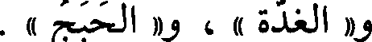
و « الغدة «، و « الحبج » .
File: 000001.gt.txt (if the image is defective, simply delete all Arabic text and the line will be excluded)
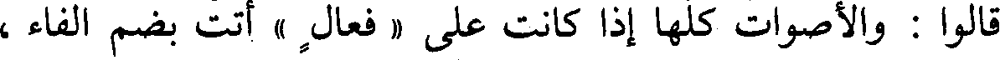
قالوا: والأصوات كلها إذا كانت على « فعال » أتت بضم الفاء ،
File: 000002.gt.txt (if the image is defective, simply delete all Arabic text and the line will be excluded)
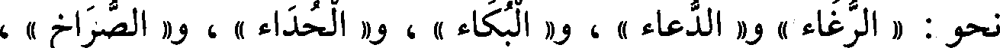
نحو : « الرغاء » و« الدعاء » ، و« البكاء » ، و« الحداء » ، و« الصراخ » ،
File: 000003.gt.txt (if the image is defective, simply delete all Arabic text and the line will be excluded)
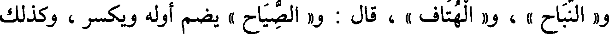
و« النباح » ، و « الهتاف » ، قال : و« الصياح » يضم أوله ويكسر ، وكذلك
File: 000004.gt.txt (if the image is defective, simply delete all Arabic text and the line will be excluded)
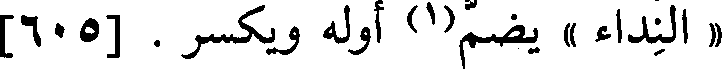
« النداء » يضم(1) أوله ويكسر . [605]
File: 000005.gt.txt (if the image is defective, simply delete all Arabic text and the line will be excluded)
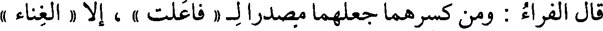
قال الفراء : ومن كسرهما جعلهما مصدرال « فاعلت » ، إلا « الغناء »
File: 000006.gt.txt (if the image is defective, simply delete all Arabic text and the line will be excluded)
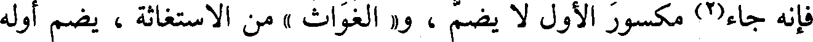
فإنه جاء(2) مكسور الأول لا يضم ، و« الغواث » من الاستغاثة ، يضم أوله
File: 000007.gt.txt (if the image is defective, simply delete all Arabic text and the line will be excluded)
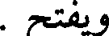
ويفتح .
File: 000008.gt.txt (if the image is defective, simply delete all Arabic text and the line will be excluded)
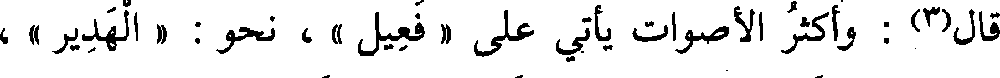
قال(3) : وأكثر الأصوات يأتي على « فعيل » ، نحو : « الهدير » ،
File: 000009.gt.txt (if the image is defective, simply delete all Arabic text and the line will be excluded)
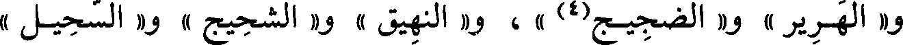
و « الهرير » و« الضجيج(4) » ، و« النهيق » و« الشحيح » و« السحيل »
File: 000010.gt.txt (if the image is defective, simply delete all Arabic text and the line will be excluded)
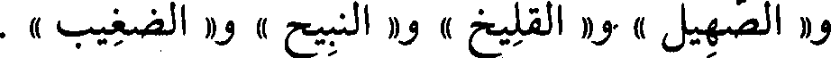
و« الصهيل » و« القليخ » و« النبيح » و« الضغيب » .
File: 000011.gt.txt (if the image is defective, simply delete all Arabic text and the line will be excluded)
وقد أدخلوا « فعالا » على « فعيل » في أكثر الأصوات، فقالوا
File: 000012.gt.txt (if the image is defective, simply delete all Arabic text and the line will be excluded)
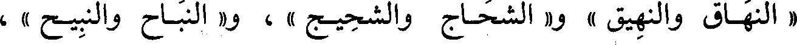
« النهاق والنهيق » و« الشحاج والشحيج » ، و« النباح والنبيح » ،
File: 000013.gt.txt (if the image is defective, simply delete all Arabic text and the line will be excluded)
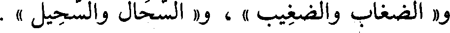
و« الضغاب والضغيب » ، و« السحال والسحيل » .
File: 000014.gt.txt (if the image is defective, simply delete all Arabic text and the line will be excluded)

قال(5) : و«فعال» يأتي كثيرا فيما يرفض وينبذ ، نحو « رفات »
File: 000015.gt.txt (if the image is defective, simply delete all Arabic text and the line will be excluded)
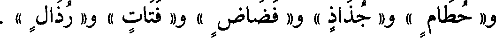
و« حطام » و« جذاذ » و« فضاض » و« فتات » و« رذال » .
File: 000016.gt.txt (if the image is defective, simply delete all Arabic text and the line will be excluded)
أنا الليث معديا علي وعاديا(1)
File: 000017.gt.txt (if the image is defective, simply delete all Arabic text and the line will be excluded)

بناه على عدي عليه .
File: 000018.gt.txt (if the image is defective, simply delete all Arabic text and the line will be excluded)
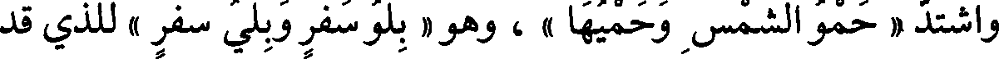
واشتد « حمو الشمس وحميها » ، وهو « بلو سفر وبلي سفر » للذي قد
File: 000019.gt.txt (if the image is defective, simply delete all Arabic text and the line will be excluded)
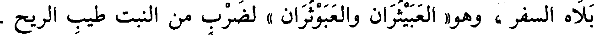
بلاه السفر ، وهو« العبيثران والعبوثران » لضرب من النبت طيب الريح .
File: 000020.gt.txt (if the image is defective, simply delete all Arabic text and the line will be excluded)
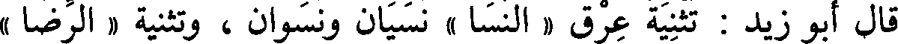
قال أبو زيد : تثنية عرق « النسا » نسيان ونسوان ، وتثنية « الرضا »
File: 000021.gt.txt (if the image is defective, simply delete all Arabic text and the line will be excluded)
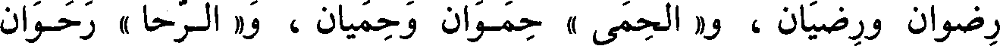
رضوان ورضيان ، و« الحمى » حموان وحميان، و« الرحا » رحوان
File: 000022.gt.txt (if the image is defective, simply delete all Arabic text and the line will be excluded)
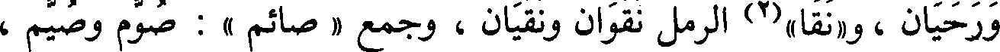
ورحيان، و«نقا » الرمل نقوان ونقيان، وجمع « صائم » : صوم وصيم،
File: 000023.gt.txt (if the image is defective, simply delete all Arabic text and the line will be excluded)
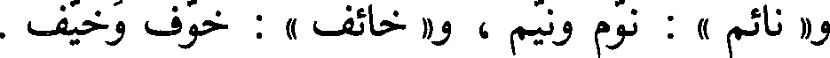
و« نائم » : نوم ونيم ، و« خائف » : خوف وخيف .
File: 000024.gt.txt (if the image is defective, simply delete all Arabic text and the line will be excluded)
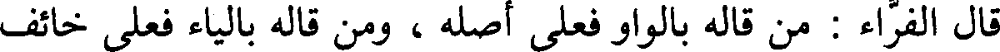
قال الفراء: من قاله بالواو فعلى أصله ، ومن قاله بالياء فعلى خائف
File: 000025.gt.txt (if the image is defective, simply delete all Arabic text and the line will be excluded)
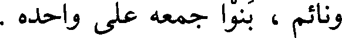
ونائم ، بنوا جمعه على واحده .
File: 000026.gt.txt (if the image is defective, simply delete all Arabic text and the line will be excluded)
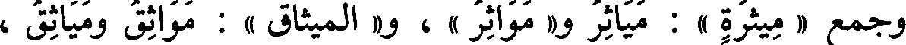
وجمع « ميثرة » : مياثر و« مواثر » ، و« الميثاق » : مواثق ومياثق ،
File: 000027.gt.txt (if the image is defective, simply delete all Arabic text and the line will be excluded)
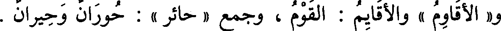
و« لأقاوم » والأقايم : القوم ، وجمع « حائر » : حوران وحيران .
File: 000028.gt.txt (if the image is defective, simply delete all Arabic text and the line will be excluded)
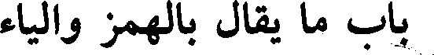
باب ما يقال بالهمز والياء
File: 000029.gt.txt (if the image is defective, simply delete all Arabic text and the line will be excluded)

و« اليرقان والأرقان » [593] ، يقال : زرع « مأروق » وميروق ، ورمح
To Save: `Ctrl+s`, make sure to choose `Webpage, complete`!